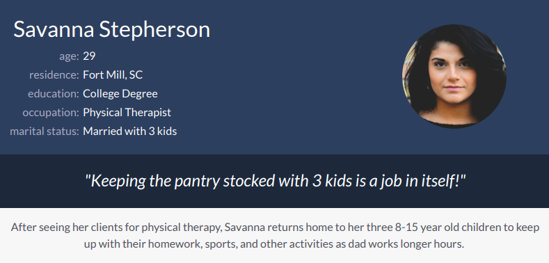
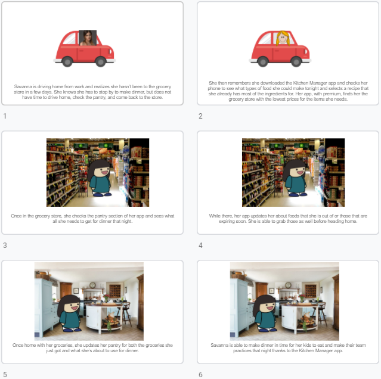
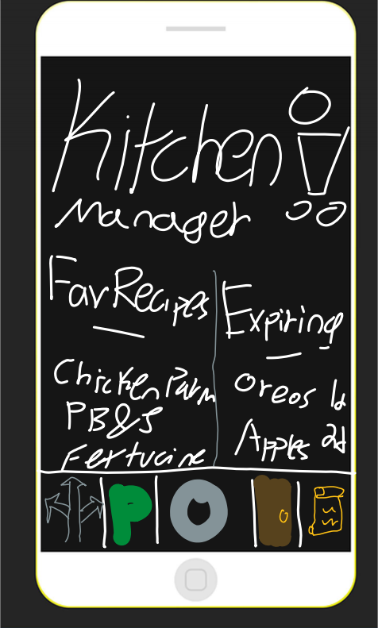
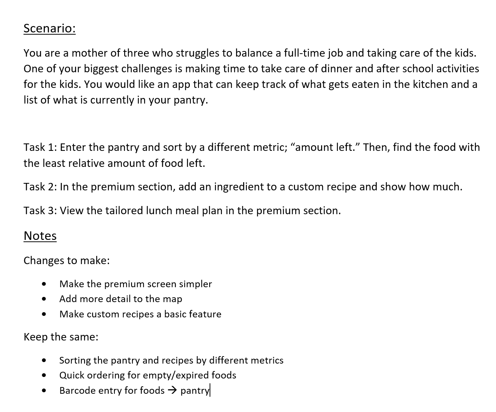
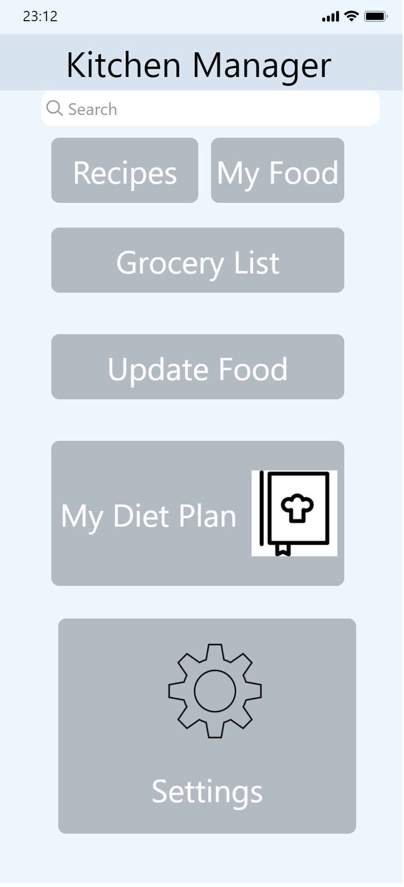
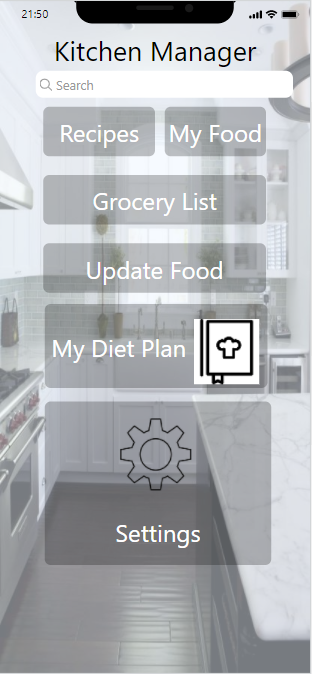
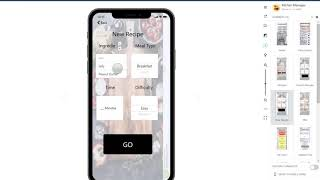

Problem Statement: Kitchen Manager

Adults are having to keep track of what food items they have, how much of that item they have, and when it expires. This app will allow the user to keep track of all that information wherever they are.
Affinity Diagram: Kitchen Manager

My group worked to come up with ways to perfect, market, and deal with the user end of our app design.
Persona: Kitchen Manager
We invented personas of an example of typical Kitchen Manager users, showing their wants, needs, and concerns, as well as relating them to real life people.
Storyboard: Kitchen Manager
We invented storyboards telling a short story of our persona and how our app would positively benefit them in an everyday situation.
Sketches: Kitchen Manager
We created sketches displaying mock drawings of some of the screens of our app, including home, pantry, and recipe screens. These are meant to visually show the user the types of functionality that our app will have.
Paper Prototype: Kitchen Manager

I created a paper prototype for all the various screens of our app and can use it to explain in depth the uses of our app.
Usability Tests: Kitchen Manager
I used my roommates to test my paper prototype and give feedback on the ease of use of certain common tasks the app should be able to complete while learning the strong and weak points of my current prototype.
Low-Fi Prototype: Kitchen Manager
We took our favorite of the sketched prototypes and using Proto.io turned them into very rough drafts of our interactive app.
Hi-Fi Prototype: Kitchen Manager
We took our low-fi prototype and added design enhancements and a few new uses to create a high fidelity prototype.
Final Presentation: Kitchen Manager
We took our hi-fidelity prototype and presented it as if it were to a buyer or customer as to why they should invest or use the app.